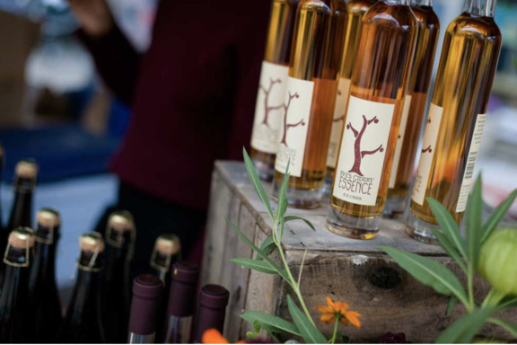
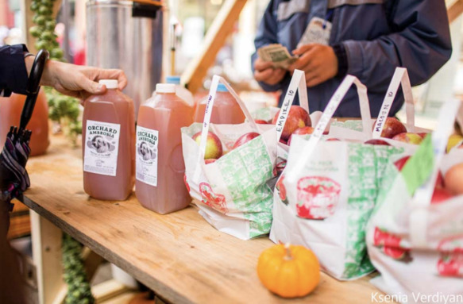
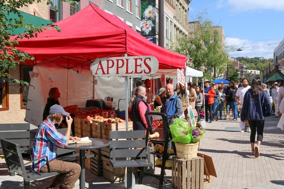
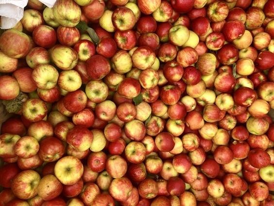

Student design project · Historical 2024 event guide · Not the official festival website
Lineup
Saturday, October 1, 2022
- 12:00pm - Rachel Beverly
- 1:00pm - Sunny Weather
- 2:00pm - Firefly Jazz Quartet
- 3:00pm - Janet Batch
- 4:00pm - Leo + The Maydays
- 5:00pm - Neo Project

Sunday, October 2, 2022
- 12:00pm - Ageless Jazz Band
- 1:00pm - Yamatai
- 1:30pm - Fall Creek Brass Band
- 3:00pm - Viva Mayhem
- 4:00pm - Noon Fifteen
- 5:00pm - Ariel Arbisser

Featured
Crafters
- A&K Creations
- Alchemist's Whim
- All Forked Up Art
- Anna Pausch Studios
- Art Of Yen Ospina
- Ashley Messana Jewelry
- Bags That Bite
- Black Rabbit Studio
- Blue Toucan Studios - Fairy Doors
- Bon Fire Craft

Food Vendors
- Macarollin
- Alchemist's Whim
- Kettle Corn Shoppe
- SPM Empanadas
- Fittnell Barbeque
- Travelers Kitchen
- Asempe Kitchen
- Vail Bros inc
- On The Street Pitas
- Silo Food Truck
